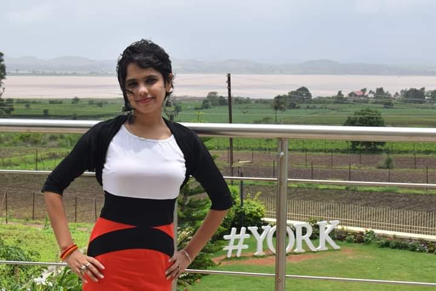

Email:
spritha353@gmail.com,
pritha@xim.edu.in.
 Orcid
Google Scholar
Orcid
Google Scholar

I am a scholar of literary, narrative, historiographical, and cultural studies of contemporary post-independence India, with a prime focus on Bengal.
I am particularly interested in gendered history, twenty-first century middle class, Dalit studies, food histories,
hijra culture, and body politics. Currently, I am working as a senior assistant professor at Amity University (main campus),
Noida, Delhi after completing my PhD from the Indian Institute of Technology Kanpur, India.
My research forte includes:
Narrative Studies
Ethnographic Studies
Gendered History
Dalit Studies
Body Politics
Hijra Culture and Community
Critical Food Studies
Studies on Contemporary Middle Class